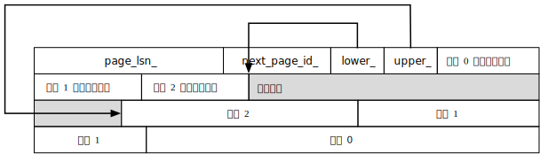
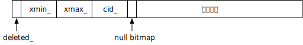

基础功能
Tip
可通过搜索 // LAB 1 BEGIN 快速定位需要补充的代码的位置
Note
实验开始前请先更新实验框架
任务 1：变长记录的页面组织（12 分）
本任务中，你需要补全 table/table.cpp, table/table_page.cpp 以及 table/table_scan.cpp 中的相关函数，来实现记录的增删改查功能。
实验框架的文件组织方式为堆表，页面之间采用链表连接，页面组织支持变长记录，页面大小为 256B。
数据页面大小
实际数据库系统中，数据页面大小一般设置为 4KB, 8KB, 16KB 等，实验框架将页面大小设置为 256B，主要是为了方便测试，避免在测试多页面功能时测试数据文件过大。
页面头由以下几个字段组成：
| 变量名 | 变量类型 | 长度（字节） | 作用 |
|---|---|---|---|
| page_lsn_ | lsn_t | 8 | PageLSN，实验 2 中使用 |
| next_page_id_ | pageid_t | 4 | 记录下一个页面的页面号 |
| lower_ | db_size_t | 2 | 页面空闲空间起始位置 |
| upper_ | db_size_t | 2 | 页面空闲空间终止位置 |
页面组织方式如下：

每条记录都由记录头、空值向量和数据组成：

记录头包含如下几个字段：
| 变量名 | 变量类型 | 长度（字节） | 作用 |
|---|---|---|---|
| deleted_ | bool | 1 | 标注记录是否删除 |
| xmin_ | xid_t | 4 | （实验 3）插入该数据的事务 id |
| xmax_ | xid_t | 4 | （实验 3）删除该数据的事务 id |
| cid_ | cid_t | 4 | （实验 3）插入该数据的事务内部 command id |
在实验 1 中，你只需要关注 deleted_ 字段即可。
变长记录中的变长字段采用长度+数据的方式记录在原地，注意与课程介绍的方法不同，为简化设计，实验框架中没有将所有变长字段放于记录最后。
本任务中，你需要补全记录插入、读取和删除的代码，正确实现后可以通过测例10-insert.test, 20-delete.test 和 30-update.test。
步骤 1：记录插入
我们首先来看记录插入的部分，记录插入的上层调用位于 executors/insert_executor.cpp，在 InsertExecutor 的 Next 函数中，调用了 Table 类的 InsertRecord 函数，该函数返回插入记录的 rid_（rid_ 表示一条记录的位置，由页面 id 和页面中的记录槽 id 组成）。
Table 类的 InsertRecord 函数是你需要实现的部分。在这个函数中，你需要找到一个页面，通过 BufferPool 的 GetPage 函数获取页面，进一步调用页面 TablePage 的 InsertRecord 函数插入记录，其中 xid 和 cid 参数在实验 3 才会使用，本实验中你只需要将这两个参数原封不动传进去即可。在寻找页面时，你需要保证页面的空闲空间能够放下要插入的记录，如果找不到这样的页面，你需要调用 BufferPool 的 NewPage 函数新建一个页面，并在新页面中插入记录。多个页面之间通过 next_page_id_ 字段组成链表，你需要正确设置该字段，使页面之间形成正向链表，即从页面 n 指向页面 n + 1（基础功能中无需考虑中间页面被删除的情况）。
Note
由于 Table 类的 first_page_id_ 在初始化时只有 NULL_PAGE_ID 和 0 两种取值，请使用正向链表（从页面 n 指向页面 n + 1）实现页面的连接，不要使用反向链表（从页面 n + 1 指向页面 n）。
TablePage 的 InsertRecord 函数也是需要实现的部分，你需要维护页面的 lower 和 upper 指针，以及页面的记录槽信息（记录位置与记录长度），并将记录写入页面，同时不要忘了将页面标记为脏页，只有脏页才会在缓存替换时写回磁盘。
完成这两个函数后，记录插入的部分就全部完成了，此时你可以尝试测试 10-insert.test：
make lab1/10
正常情况下，你将会得到如下输出：
lab1/10-insert.test ERROR
lab1/10-insert.test:9
Unexpected error: Wrong Result
Your Result:
Expected Result:
1 1.1 a
2 2.2 bb
3 3.3 ccc
看上去好像记录插入并没有成功？其实不是，这是因为我们还没有补全记录读取的代码，不能通过 select 语句正确读取记录。但是，你可以通过 xxd 或 hexdump 等工具查看数据页面，判断记录插入是否成功。
xxd huadb_test/huadb_data/2/10000
或
hexdump -C huadb_test/huadb_data/2/10000
若你在程序右侧输出的 ASCII 码中观察到插入数据的 a, bb, ccc 等字样，则说明数据已经成功写入到磁盘。
你还可以使用 huadb_parser 的页面解析功能检查页面的合法性，用法为：
./build/debug/bin/huadb-parser -d <数据文件路径>
步骤 2：记录读取
下面我们来补全记录读取的代码。记录读取的上层调用位于 executors/seqscan_executor.cpp，在 SeqScanExecutor 类的 Next 中调用了 TableScan 的 GetNextRecord 函数。
我们首先需要补全 GetNextRecord 函数，这个函数有若干参数，这些参数用于实验 3，在本次实验你无需使用这些参数。在这个函数中，你需要维护 rid_ 成员变量，表示目前读取到的记录的 rid，这是因为上层会多次调用 GetNextRecord 函数，每次返回一条记录，我们需要用 rid_ 成员变量记录目前读取到了哪一条记录，下次读取时返回下一条记录。维护 rid_ 变量之后，调用 TablePage 的 GetRecord 函数获取记录。当表中所有数据读取结束时，返回空指针，表示结束读取。
之后你需要补充 TablePage 的 GetRecord 函数，根据 slot_id 和表的结构 column_list，从页面中反序列化得到记录。
如果你正确实现了以上函数，此时应该可以通过测例 10-insert.test。如果没有通过，可以根据测试输出，利用调试器对程序进行调试。
步骤 3：记录删除
进行这一步骤之前，请确保你已通过测例 10-insert.test。
记录删除是任务 1 的最后一个步骤，你需要补充 table/table.cpp 和 table/table_page.cpp 的 DeleteRecord 函数。
table/table.cpp 的 DeleteRecord 函数的实现思路与记录插入类似，我们只需通过 buffer_pool_ 获取需要删除的记录对应的页面，调用页面 TablePage 的 DeleteRecord 函数即可。
table/table_page.cpp 的 DeleteRecord 函数实现了页面中记录的删除，在实验的基础功能中，我们仅要求实现标记删除，你只需设置记录头部的 deleted_ 变量即可。
完成上述步骤后，我们还需要修改 table/table_scan.cpp 的 GetNextRecord 函数，读取记录时判断记录是否已经被标记为删除，不再返回已经删除的数据。
至此，若你的实现正确，可以通过 20-delete.test 和 30-update.test。你可能会好奇，为何我们的框架没有 update 函数，却可以通过 update 测例。这是因为实验框架没有实现原地更新函数，所有更新操作均由删除+插入的方式实现，你可以查看 table/table.cpp 的 UpdateRecord 函数来了解框架的实现方式。这种实现方式会导致删除数据的空间不能被回收，造成了空间的浪费，带来的好处是在实验 2 和实验 3 中可以更简洁地实现事务相关特性。如果你对删除数据的空间回收感兴趣，可以在高级功能中实现垃圾回收。
万圣节问题
如果你尝试运行以下 update 语句：
create table test(id int);
insert into test values(1), (2);
update test set id = id + 1;
可能会发现程序会陷入死循环，这在数据库中被称为万圣节问题 (Halloween Problem)。
这是因为在我们删除+插入的更新操作中，由于每次只对一条记录进行操作，读取记录时会将新插入的记录继续读取，对于新插入的记录，会再次执行删除+插入的操作，从而使读取永远不会中止。在本次实验中，你暂时无需解决这个问题，我们会在实验 3 中通过事务的 command id 来解决。
步骤 4：将 SimpleCatalog 替换为系统表 SystemCatalog
本部分不需要添加任何代码，只需要改变编译选项即可。
在完成步骤 1-3 之前，由于数据库不具备基础的增删改查功能，存储元信息的系统表无法正常工作，我们使用了 SimpleCatalog 临时替代了系统表功能。但是 SimpleCatalog 没有数据库的增加/删除/切换功能，导致我们无法通过 40-database.test 测例。因此，我们需要改变编译选项，让我们的数据库使用 SystemCatalog 系统表。
首先清理此前生成的编译文件及数据库文件：
make destroy && make clean
之后编译使用 SystemCatalog 的数据库：
make
或
make debug
编译完成后，再次对 lab 1 测例进行测试，可以通过 40-database.test 测例。
此后的所有实验，我们只需要使用 SystemCatalog 版本的数据库即可，不再需要使用 make lab1-debug 命令。
如果改变编译选项后仍无法通过 40-database.test 测例，可以与我们联系。
任务 2：LRU 缓存替换策略（3 分）
在任务 1 中，我们多次调用 BufferPool 的 GetPage 和 NewPage 函数，本任务中，你需要阅读 BufferPool 中这两个函数的实现代码，并为缓存池添加 LRU 替换算法。你只需修改 storage/lru_buffer_strategy.cpp 即可，必要时可以在 storage/lru_buffer_strategy.h 中添加成员变量。整体代码量很小，但希望通过此任务加深对缓存池的理解，这将帮助你更快地完成之后的实验。
BufferPool 的主要成员变量有三个：页面缓存 buffers_ ，页面号到 buffers_ 下标的映射表 hashmap_ 以及缓存替换策略成员 buffer_strategy_。
其他成员变量主要为系统表相关变量，你无需过多关注。
页面缓存大小默认为 5，每次访问页面时会将页面放入缓存区，并调用 BufferStrategy 的 Access 函数。若缓存区已满，则需要调用 BufferStrategy 的 Evict 函数获取淘汰页面的编号。
本任务中，你需要实现 LRUBufferStrategy 的 Access 和 Evict 函数，实现 LRU 缓存替换算法，正确实现后你将通过50-buffer_pool.test测例。
报告要求
实验报告的通用要求请查看实验提交要求中的实验报告部分。
本次实验中，请在实验报告中说明如何寻找记录插入的页面，页面内部如何管理记录，记录读取的策略，以及 LRU 缓存替换算法的实现过程。